Les portails de gravités
Il existe 3 types de portails de gravités :
- Portail de gravité jaune : Il met la gravité vers le haut.
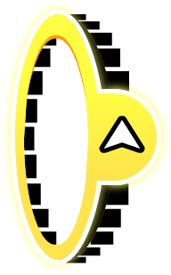
- Portail de gravité bleu : Il met la gravité vers le bas (comme par défaut).
- Portail de gravité vert : Il inverse la gravité (si la gravité est vers le bas, alors elle sera vers le haut, et si la gravité est vers le haut, alors elle sera vers le bas).
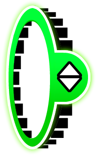
Le portail de téléportation
Le portail de téléportation permet de se déplacer instantanément du portail vers sa sortie.
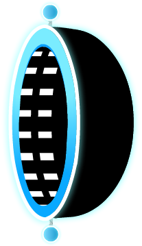
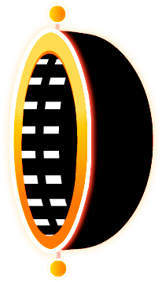
Les portails de Miroir
Le portail de miroir fonctionne comme un miroir, en reflétant le niveau avec un vrai miroir.
Comme plusieurs portails, celui-ci a un équivalent pour revenir à la normale.
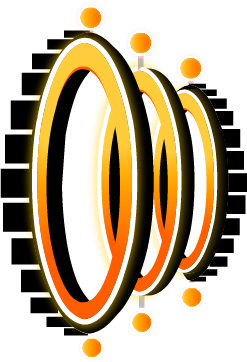
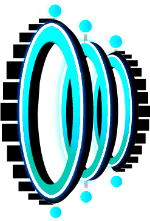
Le portail Dual
Le portail Dual crée un autre joueur qui est lui aussi contrôlé par le joueur ; la 2e icône est en symétrie avec l'icône principale.
Comme pour le portail de miroir, celui-ci a un équivalent pour revenir à la normale.
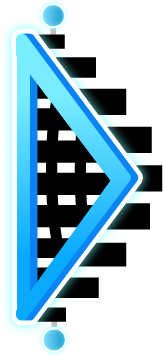
Les portails de taille
Il existe 2 types de portails de taille :
- Portail de taille Rose : Il rend le joueur plus petit et lui donne une gravité plus élevée.
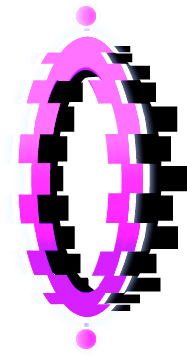
- Le portail de taille Vert : Il rend au joueur sa taille normale et lui redonne une gravité normale.
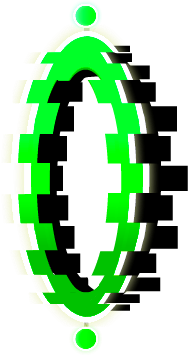
Les portails de vitesse
Il existe 5 types de portails de vitesse :
- Le portail de vitesse Jaune : C'est le portail de vitesse la plus lente.
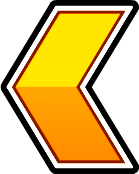
- Le portail de vitesse Bleu : C'est le portail de vitesse normal.
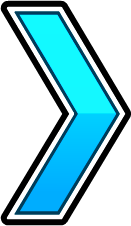
- Le portail de vitesse Vert : C'est le portail de vitesse rapide.
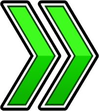
- Le portail de vitesse Rose : C'est le portail de vitesse très rapide.
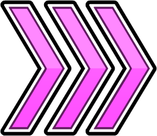
- Le portail de vitesse Rouge : C'est le portail de vitesse la plus rapide.
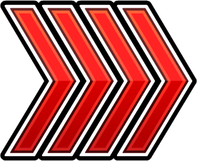
Pour en savoir plus
Autre description